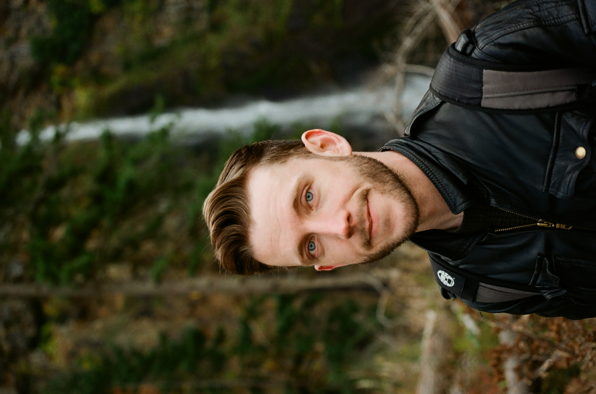

George A.
I started shooting film in 2009 and digital in 2015. I process my own film and scan it as well.
I focus on portaiture and concerts or big events.
shoot me an email to answer any questions or to book with me.
I started shooting film in 2009 and digital in 2015. I process my own film and scan it as well.
I focus on portaiture and concerts or big events.
shoot me an email to answer any questions or to book with me.